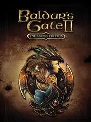

 |
|
| Tiempo de juego | 16s |
| Última actividad | 16/1/2026 11:38:26 |
| Añadido | 17/11/2025 17:44:30 |
| Modificado | 17/11/2025 17:45:35 |
| Estado de finalización | Jugado |
| Librería | Playnite |
| Fuente | |
| Plataforma | PC (Windows) |
| Fecha de lanzamiento | 15/11/2013 |
| Puntuación de la Comunidad | 84 |
| Puntuación de la Crítica | |
| Puntuación de usuario | |
| Género | Adventure Role-playing (RPG) Strategy |
| Desarrollador | Overhaul Games |
| Editor | Atari, Inc. Beamdog |
| Característica | Co-Operative Multiplayer Single Player |
| Enlaces | Official Website Steam GOG |
| Tag | |
Si Baldur's Gate 1 fue la facultad, esta secuela es el doctorado del rol. Agarraron una fórmula perfecta y la elevaron a un nivel que, hasta el día de hoy, muy pocos juegos han podido tocar. Acá la cosa se pone oscura, épica y muchísimo más personal.
La historia arranca con vos encerrado en una jaula, siendo el juguete de un mago asqueroso llamado Jon Irenicus, para muchos uno de los mejores y más memorables villanos de la historia de los videojuegos. Ya no sos un simple aventurero; tenés un enemigo con nombre, apellido y una voz que te hiela la sangre. Toda la trama es una búsqueda de respuestas y, eventualmente, de venganza.
Pero el verdadero corazón del juego son tus compañeros. Las interacciones, las subtramas personales y los romances que nacieron acá sentaron las bases para todo lo que BioWare haría después. Tu equipo se siente vivo, discuten entre ellos, se enamoran, te traicionan... una locura.
A nivel jugable, todo es más grande y zarpado. Pasás de ser un aventurero que sobrevive a ser una fuerza de la naturaleza que lanza hechizos que rompen el tejido de la realidad. Conseguís tu propia fortaleza, liderás facciones... es poder en estado puro. La "Enhanced Edition", encima, te incluye la expansión Throne of Bhaal, dándote TODA la saga completa para que lleves a tu personaje hasta el final de su legendario viaje.
Poco más que decir. Es el pico más alto del género antes de la gran obra maestra moderna que culmina una trilogía excepcional. Una obra cumbre que todo ser humano debería jugar.